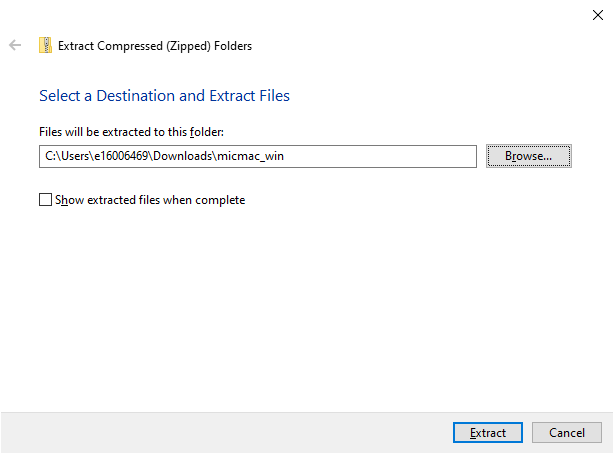
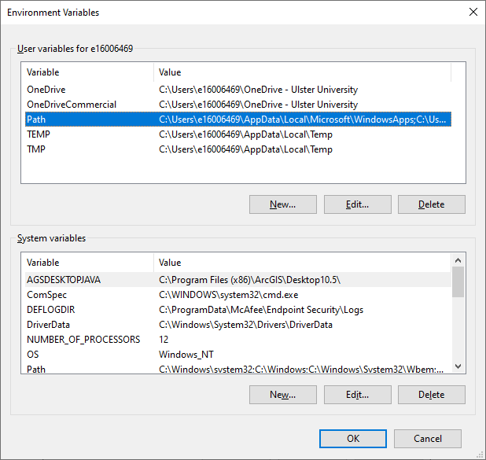
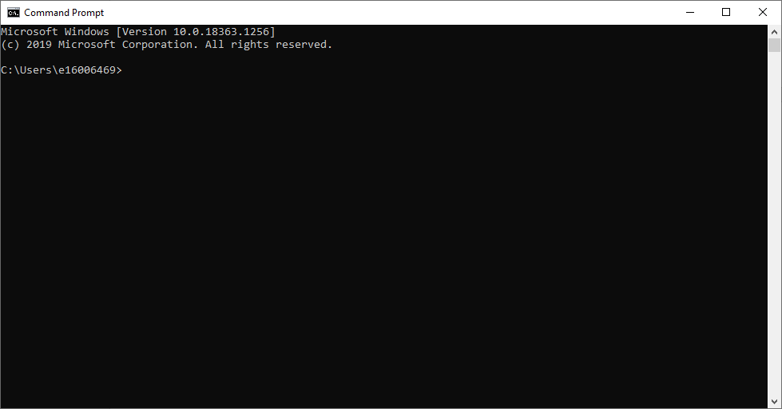

software setup
Contents
software setup#
For Practical 1, we’ll be using an open-source photogrammetry software package, MicMac. If you would like to visualise the point clouds, you can also install the free software packages MeshLab or CloudCompare. All of these software packages are available on multiple platforms (Windows, Mac OS, linux), though the installation for Mac OS and linux may be somewhat more involved.
This tutorial will guide you through the steps for installation on Windows, but if you would like to try to install these programs on Mac OS or linux, I am happy to help guide you through the process. As these are open-source software, there is no license to purchase – you can download and install them on as many computers as you like, as many times as you like.
micmac#
Note
Please note – these instructions will show examples from Windows 10, but the procedure will be essentially the same for other versions (excluding Windows XP).
To start, go to https://github.com/micmacIGN/micmac/releases/tag/MMASTER_v1.1. This version of MicMac is the most recent complete build for Windows (and Mac OS), and it is the one that we will be using for Practical 1. Download micmac_win.zip, which is the Windows build.
Once it has finished downloading, extract the .zip file. The developers recommend installing MicMac in a directory where the path does not have spaces or special characters, as this can sometimes cause errors. We will extract the file to C:\MicMac\. Double-click on micmac_win.zip, then select Extract all:
{kind=link}
This will open the following window:
{kind=link}
Click Browse, then navigate to C:\ and create a new folder, MicMac. Click Extract to extract the files.
adding micmac to the path#
When this has finished, you need to add C:\MicMac\bin to your Windows path. In the Search bar at the bottom of the screen,
type “environment” and select Edit environment variables for your account:
{kind=link}
Select Path, then Edit:
{kind=link}
Finally, select New and type in C:\MicMac\bin, then click OK in each of the windows you’ve opened:
{kind=link}
{kind=link}
Next, open the Command Prompt by typing “command prompt” in the Search bar. You may also want to pin this to your taskbar (right-click on the icon and select Pin to taskbar), at least for the first practical. You should see this window:
{kind=link}
At the command prompt, type mm3d and hit enter. You should see something like this (you may have to scroll up to see it):
{kind=link}
If this is not what you see, please take a screenshot of any error messages that you encounter, and send them along to the instructor or post them in the Discussion Board.
meshlab#
To install MeshLab in order to visualize point clouds during Practical 1, you can go here: https://www.meshlab.net/#download. From there, you can download the binary for the operating system of your choice (win64 in this case) and follow the instructions for the installer.
cloudcompare#
To install CloudCompare to visualize point clouds during the Week 1 practical, you can go here: https://www.danielgm.net/cc/. From there, you can click the Download tab and select the version for your operating system.
If all you’re doing is visualizing point clouds, you can also download ccViewer, rather than CloudCompare, from the same link.